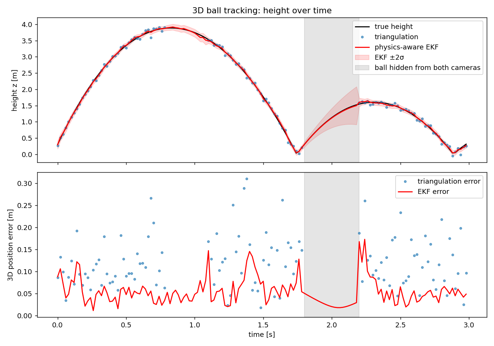

Vision lab / Sports tracking demonstrator
Physics-aware 3D ball tracking
Tracking a football in 3D from two cameras, and keeping the estimate stable when the ball is hidden, by combining camera geometry with a physics model of the flight.

Simulated two-camera sequence · triangulation vs. physics-aware EKF
Project overview
Broadcast-style ball tracking has to deal with noisy detections and frames where one or both cameras lose the ball behind players. This project simulates a kicked ball, two calibrated cameras and occlusions, then compares plain triangulation with a filter that knows how a ball moves.
Approach
- Ball physics: gravity, quadratic air drag and ground bounce with restitution and friction.
- Two pinhole cameras (P = K[R|t]) with 2-pixel detection noise and simulated occlusions.
- DLT triangulation with SVD as the geometry-only baseline.
- Extended Kalman Filter with the physics model as its motion model, updating directly in pixel space from whichever cameras see the ball.
Results
- Triangulation: 0.134 m RMSE, and no estimate in 23% of frames.
- EKF: 0.067 m with both cameras, 0.051 m with one camera, 0.030 m while fully hidden (prediction only).
- EKF coverage: 100% of frames.
Next steps
Model spin and the Magnus effect, estimate the bounce coefficient online, add a smoother for offline replay, run on real video with pitch-line calibration, and extend the model to a cricket ball.
Engineering focus
Multi-camera geometry, state estimation and physics-based modelling.